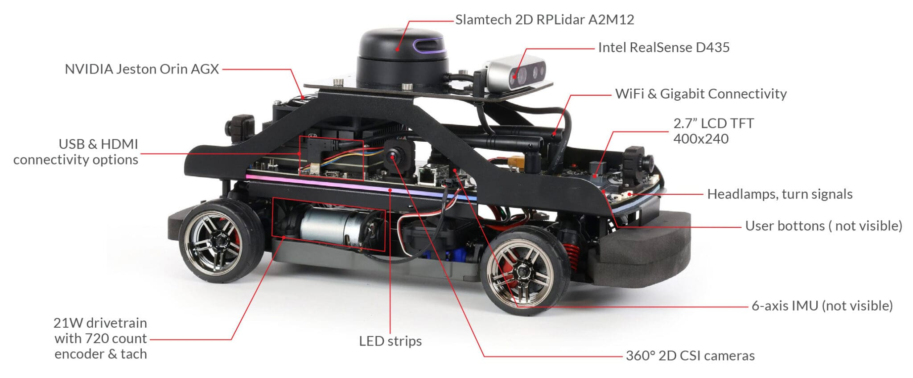
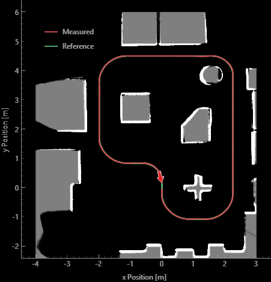
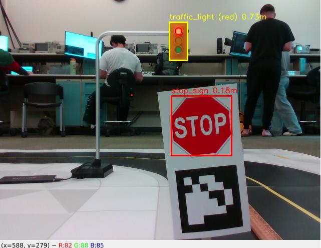
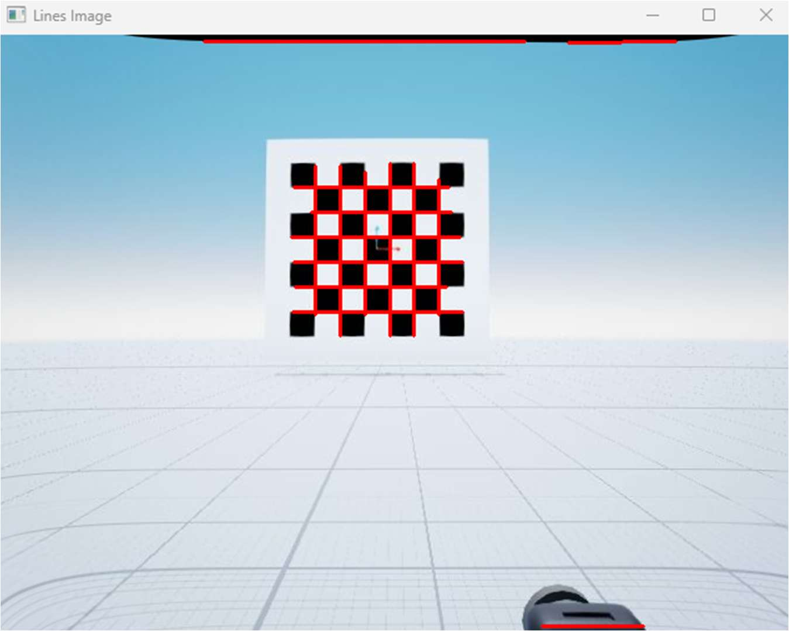

Autonomous Vehicles · State Estimation · Perception
Perception-Aware Autonomous Vehicle
A term of coursework on the Quanser QCar 2, building from raw IMU characterization up to a vehicle that plans a route and obeys stop signs and traffic lights.
A note on authorship
This was structured coursework, not independent work. The course framework, starter code, and hardware interface classes were written by Prof. Siavash Farzan of the Cal Poly Electrical Engineering Department, who deserves credit for that material. Students filled in designated algorithm functions inside that scaffolding.
What this page documents is therefore the topics I studied and the systems I got working — not a claim of having authored the surrounding codebase. The engineering understanding is mine; the framework it runs inside is his.
Progression
What the term covered.
Each stage built on the one before, ending with a vehicle that drives a planned route under traffic law.
IMU interfacing and noise characterization
Reading the inertial sensor over its interface, logging it at rest, and characterizing what the signal does when nothing is moving. The gyroscope has a bias that drifts and a random walk on top of it; quantifying both as a statistical model is what lets a filter downstream decide how much to trust the sensor versus its own prediction.
State estimation
Dead reckoning integrates wheel odometry and heading forward, which works briefly and then drifts without bound. The extended Kalman filter fixes that by predicting with the motion model and correcting against GPS, linearizing the non-linear model at each step. Fusing a separate heading measurement keeps yaw from being the weak axis.
Speed and steering control
Two loops that do not talk to each other. A PI controller regulates speed against a reference, integrating away the steady-state error a proportional term alone leaves behind. Steering is geometric — the Stanley controller drives both the heading error and the cross-track error of the front axle to zero, which is what keeps the car on the line rather than merely parallel to it.
Camera calibration and line detection
A camera lens bends straight lines, so the first job is recovering the intrinsics and distortion coefficients from a checkerboard of known geometry. Only once the image is undistorted does line detection mean anything — a lane edge found in a warped frame maps to the wrong place in the world.
LiDAR mapping
Raw LiDAR gives ranges and bearings; an occupancy grid turns them into a map the planner can use. Each scan marks cells along a ray as free and the cell at the return as occupied, accumulated over time so noise averages out and the static structure of the room emerges.
Perception-aware driving under traffic law
Everything above, plus the rules. Detections carry a class and a range, and a finite-state machine decides what to do with them — approach, slow, stop, wait, proceed — so the car obeys a stop sign and a red light instead of merely noticing them.
The platform
What the vehicle carries.

Selected results
The system working.



Demonstrations
The vehicle driving.
End-to-end runs in simulation and on the physical track. Simulation lets the planner and finite-state machine be exercised safely and repeatably; the physical runs are where sensor noise, tyre slip, and lighting stop being theoretical.